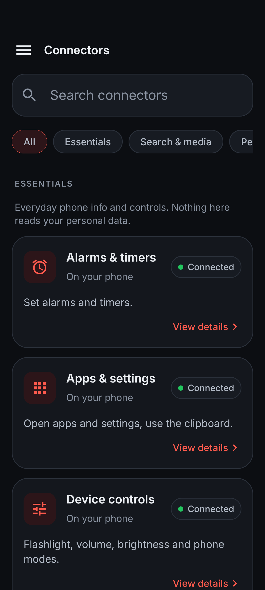
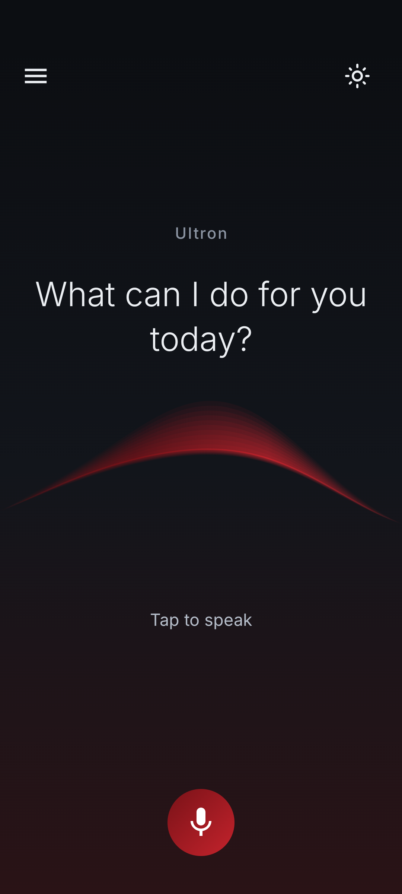
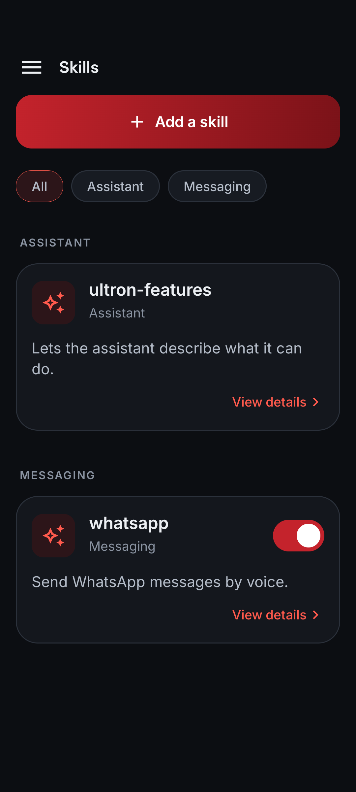

01 / TALKPick up a conversation.
Pick up a conversation.
Not another screen.
Speak naturally, ask a follow-up, or interrupt when your thought changes.
Real-time voice · Gemini Live
✦ MEET YOUR PERSONAL ANDROID ASSISTANT
Ask a question. Open an app. Follow a thought.
Ultron turns a conversation into something useful.


A CONVERSATION, CONNECTED
Ultron connects what you say with the tools and context
that can help. You choose what it can use.
Natural, live conversation
Notes, PDFs and context
Tools that take action
Useful services, connected
Access follows the connectors and Android permissions you enable.
SMALL REQUESTS. REAL POSSIBILITIES.
Speak naturally, ask a follow-up, or interrupt when your thought changes.
Timers, apps, brightness, volume.
The little things, taken care of.
Add your text or PDFs. Ask about them by voice.
Save useful details for future conversations. Review, edit or remove them whenever you like.
“Keep your answers short.”
TRY A THOUGHT
Choose a request to see where the
conversation could go.
A quick request becomes a timer on your phone. Keep your hands on what you’re doing.
Uses the enabled Alarms & timers connector.
THIS IS ULTRON
Actual screens. A focused home, organized connectors,
and skills that make the assistant yours.
See what’s connected.
One tap. Your next thought.

For the things you do.
PERSONAL, ON YOUR TERMS
Enable the tools and Android permissions you need.
Memory and knowledge are stored on your device.
Add skills for workflows such as WhatsApp messaging.
Voice uses Gemini in the cloud. Connectors receive task data.
A FEW THINGS TO KNOW
A personal voice assistant for Android. Ultron combines live conversation with phone controls, connected services, memory, your own documents, and skills.
Live AI conversations and cloud connectors need an internet connection. Memory and knowledge are stored on the phone, but AI features use cloud processing.
Phone navigation and screen tools can interact with supported screens when accessibility access is enabled. What works depends on the app, enabled tools and Android restrictions.
Contact the creator for current access and setup details. This showcase does not provide an APK or app-store download. Ask about Ultron ↗